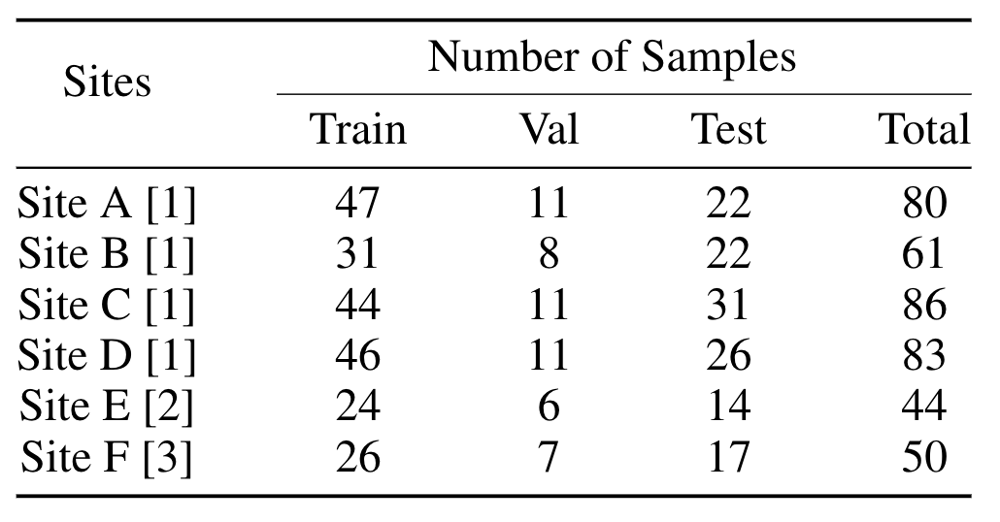
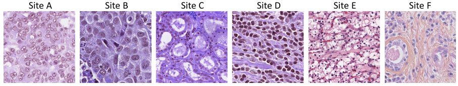

This is a well-organized multi-site dataset for histology nuclei segmentation, which contains H&E stained tissue images with segmentation masks collected from three public datasets.
It can support research in various problem settings with need of multi-site data, such as Federated Learning, Domain Generalization, Multi-site Learning and Continual Learning, etc.
|  |
|  |
@article{jiang2021harmofl,
title={HarmoFL: Harmonizing Local and Global Drifts in Federated Learning on Heterogeneous Medical Images},
author={Jiang, Meirui and Wang, Zirui and Dou, Qi},
journal={arXiv preprint arXiv:2112.10775},
year={2021}
}